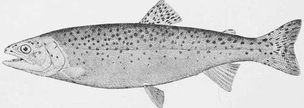

The Rocky Mountain Trout
Description
This section is from the book "American Game Fishes", by W. A. Perry. Also available from Amazon: American Game Fishes: Their Habits, Habitat, and Peculiarities; How, When, and Where to Angle for Them.
The Rocky Mountain Trout
It is popularly supposed that there are many species of Trout in our western mountain streams and lakes, but, in fact, all the Trout found in waters west of the Missouri River may be referred to three species. These are (a) the Rocky Mountain Trout, Salmo purpuratus, also variously known as the Salmon Trout, the Yellowstone Trout, the Lake Trout; (b) the California Brook Trout, Salmo iridens, otherwise known as the Rainbow Trout, the Sierra Nevada Trout, the Lake Tahoe Trout, etc., and (c) the Rio Grande Trout, Salmo spilurus.
It is not strange that even close observers, who are not experts in ichthyology, should be misled in judging of these fishes, for individuals of any given species vary so under varying conditions as at times to require the most careful scrutiny of the expert to place them in their proper class. For instance, a fish-dealer in Tacoma-an intelligent, well-informed man by the way -told me that there were five distinct species of Trout in the waters thereabouts, and proceeded to select one of each from his stock and explain its peculiarities. He called them the Salmon Trout, the Sea Trout, both of which he said were caught in Puget Sound; the Puyallup Trout, taken only from the lower Puyallup River; the Bull Trout, found in all the streams flowing into the sound, and the Glacier Trout, that he said was found only in the head-waters of streams flowing out of the Mount Tacoma glaciers.
When one of each was ranged on the board, the variety of colors and shapes was indeed enough to puzzle the most learned ichthyologist in the land. The Salmon Trout was mildly colored and deep in proportion to his length; the Sea Trout was brighter and was long and slender-a veritable greyhound in build; the Puyallup Trout was heavier in proportion to his length than either of the others; his spots were black and well accentuated, and his whole contour showed that he was lazy and well-fed. The Glacier Trout was smaller than any of the others, and the dealer said he never grew to weigh more than a pound. He wras of a dull, milky hue-like the water he inhabited-was lank, lean and looked as if there had been a famine in his neighborhood.
The Bull Trout was king of the group. He hailed from the Green River and wore such a suit of clothes as could only preserve the resplendent colors in its icy crystalline embraces. He was large and lusty, fat and pugnacious-looking, with a head like his namesake and a belly that showed he had been living on the fat of the land. His pectoral fins and throat were a fiery, cardinal red; his belly and sides, silvery; his back, a dark somber green, and his round black spots appeared to stand out like the heads of hobnails. His whole aspect showed him to be an aggressive, intrepid navigator, a fish that would stem the wildest cataract on the river and that, if hooked, would make sad havoc of any but the best of tackle, and of even that, unless managed by an expert angler.
Nearly every stream and every lake of any note, in our great western mountain district, has a Trout that neighboring ranchmen, if there are any, deem a distinct species peculiar to that water. In other waters you will find Trout bearing other local names, as the Flathead Lake Trout, the Yellowstone Trout, the Green River Trout, the Geyser Trout, and many others, for which their sponsors claim characteristics not to be found in any other Trout. But these characteristics may usually be traced to certain conditions of water, food, color and character of rocks, or other matter, composing the bed of the stream or lake in question, and the fact should never be lost sight of, that if a Trout be taken from any one of these waters, transported and placed alive in any other water inhabited by Trout, he will in a few hours, or days at most, be substantially like his new neighbors, not only in color but in other respects.
Black-Spotted Or Mountain Trout.
There are Trout in the Bitter Root River that grow to weigh ten to fifteen pounds-light-colored, long-waisted fellows-which the natives call Cannibal Trout, because they can only be caught with a live minnow. The ranchmen on that stream will tell you that Cannibal Trout are not found in any other water in the territory.
And when all these supposed species of Trout come to be critically examined by a skilled ichthyologist they prove to vary from the type of their species only on account of certain conditions under which they have lived. Salt water, brackish water, fresh water of slow- current and only partially clear; the milky, lime-charged water of the glaciers; the clear, cold water that foams over rapids in the typical mountain streams; scant or abundant food, and its quality as well as quantity; sex, old age or youth, are all important factors in coloring and shaping Trout. If one of the Sea Trout were taken from Puget Sound and placed in the icy currents at the foot of the Tacoma glaciers, and one oi the Glacier Trout taken from his home and turned loose in the sound, they would change color, and, to some extent, other characteristics, soon after changing places.
All these Tacoma Trout, as well as the Cannibal Trout - and in fact as well as nearly all Trout to be found in any mountain water west of the Missouri and north of the fortieth parallel of north latitude-belong to the species that forms the subject of this paper-i.e., the Rocky Mountain Trout, Salmo purpuratus. This species is described by Professor David S. Jordan and Charles H. Gilbert in contributions to north american ichthyology.
Salmo purpuratus-Pallas. Salmon Trout of the Columbia ; Vol tows tone Trout; Rocky Mountain Brook Trout; Lake Trout.
Body moderate elongate, compressed. Head rather short, mouth moderate, the maxillary not reaching far beyond the eyes. Vomerine teeth as usual, set in an irregular zigzag series; teeth on the hyoid bone normally present, but often obsolete, especially in old examples. Dorsal fin rather low; caudal fin slightly forked, less so than in iridens [This is the California Brook Trout ox Rainbow Trout\, more than inspilu-rus [Rio Grande Trout], the caudal more forked in young individuals than in the adult, as in all Trout. Scales moderate, varying to rather small. Back and caudal peduncle profusely covered with rounded black spots of varying size; dorsal, caudal and adipose fin covered with small black spots about as large as the nostril; a few spots on the head; belly rarely spotted ; inner edge of the mandibles below with a red blotch ; sea-run specimens are nearly uniform silvery; males with a broad lateral band and patches of light red; extremely variable iu color and form. Head 4; depth 4. D. 10 A. 10.; Caeca 43. Scales variable in size, 33-150-30 to 39- 170-30. The common Trout of the Rocky Mountains and Cascade region, abounding in all the streams of Alaska, Oregon and Washington, where it descends to salt water, and reaches a weight of twenty pounds (Columbia River, Charles J. Smith); also in the Yellowstone Region, the Upper Missouri, the Upper Rio Grande, Colorado, and the lakes oi the Great Basin of Utah, being very abundant in Utah Lake. Not common south of Mount Shasta in California. This species is apparently the parent stock, from which our other Black-spotted Trout have scarcely yet become differentiated. Considerable local variations occur, especially in size, coloration, and size of scales. The red blotches on the lower jaw between the dentary bones and the membrane joining them is very constant and characteristic. [Synonomy.]
[Salmopurpuratus, Pallas, Zool. Ross. Asiat. iii, 374, 18r 1 - 31: Salmo clarki, Rich. Fauna Bor.-Amer. iii, 224, 1836: Fario stcllatus, Girard, Proc. Acad., Nat. Sci. Phila. 219, 1856; Salmo brevicauda Suckley, Am. Lyc. Nat. Hist. N. Y. vii, 308, 1861: Salmo steliratus, gibbsi, 3 and brevicauda, Gunther, vi. 117- 120; Salmo clarki, Jordan, Proc. U. S. Nat. Mus. i, 77; Sal/no tsuppitch, Jordan, Proc. U.S. Nat. Mus. i, 72; Fario aurora,Girard, Proc. Acad.Nat.Sci.,Phila.viii,218, 1856; Salar lewisi, Grd. Proc. Acad. Nat. Sci., Phila. 219, 1856; Salar virginalis, Girard, 1. c. 220; Salmo carinalus, Cope, Hayden's Geol. Surv. Mont. 1871, 471-472; Salmo Utah, Luckley, Monogr. Salmo, 136; Salmo aurora, lewisi, and virginalis, Gunther, vi, 119-123.)
In "The Fishery Industries of the United States," issued under the auspices of the Smithsonian Institution, the following observations are made on this fish:
Continue to: